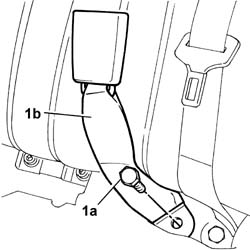

7065B14 Left or right rear seat belt ANCHORAGE ROD - R.R.
- Path
- Procedures > 70 FITTINGS > 7065 SEAT BELTS AND ACCESSORIES > 7065B REAR SEAT BELTS > 7065B14 Left or right rear seat belt ANCHORAGE ROD - R.R.
- Kind
- repair procedure (removal / refitting; the operation number is the code)
- Applies to
- all engines; all production periods
- Interactive page
- https://sloeber94.github.io/elrnDB-lThss/en/#/80761
Applies to: all engines; all production periods
 Removing
Removing
 Refitting
RefittingSee in Op. 7050A20 Single rear seat cushion - R.R.
1. Undo the bolt (1a) and remove the anchorage rod (1b).

Applies to: all engines; all production periods
Refitting
Removing- Place the anchorage rod in position and tighten the fixing bolt to torque.
 | Value - daNm | Fastening | Component | Ø |
|---|---|---|---|---|
. | 4 | Bolt | REAR SEAT BELT MOUNTING ROD | 7/16" |